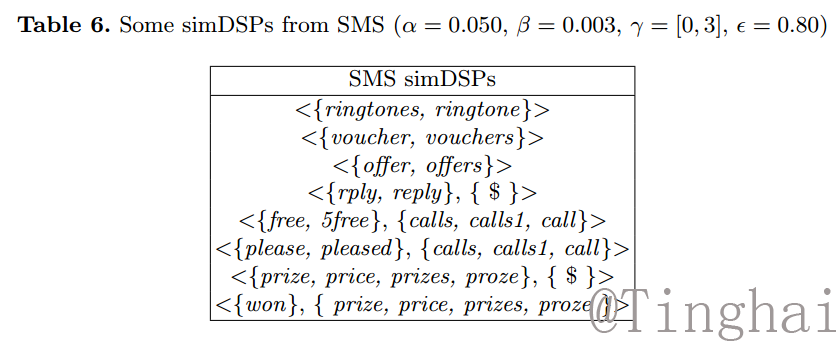

Mining Similarity-Aware Distinguishing Sequential Patterns from Biomedical Sequences
基于相似敏感的对比序列挖掘
Distinguishing sequential pattern
Biomedical Sequence
Spam Message
Follow-Set
Hybrid Search
Trie
Introduce
Distinguishing sequential pattern (DSP) mining, a specific type of contrast data
mining [1], extracting sequential patterns showing the discrimination between
two datasets, has attracted considerable attention in many fields. DSP mining
aims to discover the patterns that occur frequently in one class and infrequently
in sequences of another class. DSP mining has been proven to be explainable and
efficient on a two classes comparison [2], such as building accurate classifiers [3],
detecting anomaly [4] and analyzing biological sequential data [5].
We want to analyze the purchasing behavior between young customers and senior customers in the shopping transactions, listed in Table 2. In
our common sense, the products headphone, bluetooth and earphone are similar
products. If we regard them as the same product, we may get the DSP patterns
like < phone, earphone >. We can discover that young customers prefer buying
the product earphone after purchasing phone compared with senior customers.
If we match the pattern item by item, we cannot find this phenomenon. Besides, there are many situations in biology that require to consider the similarity
between items, such as amino acids have similar property in protein.
Method
we design an efficient algorithm
to discover simDSPs with follow set which we only need to consider some quality
candidate patterns rather than enumerate all candidate patterns.
As stated above, the advantage of candidate-generationand-test approach is high efficiency. However, the memory
cost is huge, since many temporary results have to be stored.
Thus, the candidate-generation-and-test approach is unsuitable
for very large data sets. To overcome this challenges, we
propose a hybrid search strategy (a combination of breadthfirst search and depth-first search). Specifically, simDSP-Miner
firstly performs the breadth-first strategy to generate candidate
patterns using pre-defined amount of memory, then performs
the depth-first strategy to continue the remaining search.
Result

SMS spam is an important topic in our life. The dataset of SMS (from UCI) is different
from other text sequences because it is messy. In our experiments, we use spam messages as
positive sequences D+ and ham messages as negative sequences D−. The preprocess of data likes Bible. Something different is that we replace all digit with
symbol “$” and save the sequences whose length are no less than ten. Table 6
gives a part of mining results. From the observation in table, there is some difference from the result in Bible experiment because of the messy data of spam
which has many spelling mistakes. The mining simDSP is interesting. For example, the pattern < {rply, reply}, { $ } > where the words “rply” and “reply” are
similar. According to our exprience, they have the same meaning. If we do not
consider the similarity between them, the pattern < {rply, reply}, { $ } > cannot
be discovered. The same situation exists in pattern < {free, 5free}, {calls, calls1, call} > due to the messy text in spam data, or the trick in spam messages for
escaping from being filtered by message service.
Refference
1. Dong, G., Bailey, J., eds.: Contrast Data Mining: Concepts, Algorithms, and Applications. CRC Press (2012)
2. Dong, G., Li, J.: Efficient mining of emerging patterns: Discovering trends and differences. In: Proceedings of the Fifth ACM SIGKDD International Conference on Knowledge Discovery and Data Mining. (1999) 43–52
3. Shah, C.C., Zhu, X., Khoshgoftaar, T.M., Beyer, J.: Contrast pattern mining with gap constraints for peptide folding prediction. In: Proceedings of the 21st International Florida Artificial Intelligence Research Society Conference. (2008) 95–100
4. She, R., Chen, F., Wang, K., Ester, M., Gardy, J.L., Brinkman, F.S.: Frequentsubsequence-based prediction of outer membrane proteins. In: Proceedings of the 9th ACM SIGKDD International Conference on Knowledge Discovery and Data Mining, ACM (2003) 436–445
5. Durbin, R., Eddy, S.R., Krogh, A., Mitchison, G.J.: Biological Sequence Analysis: Probabilistic Models of Proteins and Nucleic Acids. Cambridge University Press (1998)